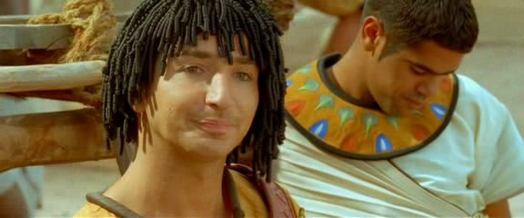

Je ne pense pas qu'il y ait de bonnes ou de mauvaises
situations... Si j'dois résumer ma vie aujourd'hui avec vous, je
dirais que c'est d'abord des rencontres. Des gens qui m'ont
tendu la main quand je ne pouvais pas quand j'étais seul chez moi.
Et quand on me demande aujourd'hui "mais comment fais-tu pour avoir cette humanité",
bah je réponds tout simplement c'est ce goût de la vie,
ce goût, qui m'a donné l'envie de trouver cet interlocuteur en face,
ce miroir qui vous aide à avancer."
